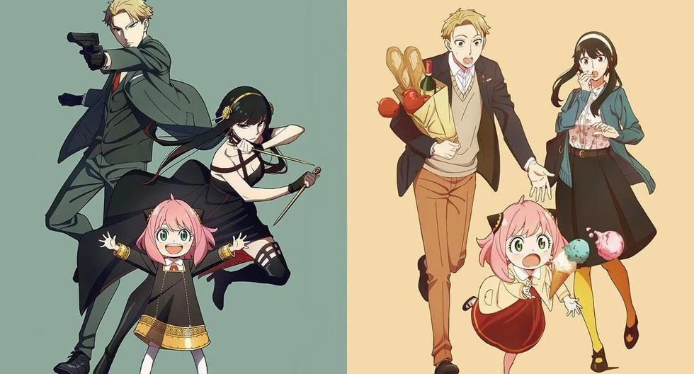

Informacion personal:
Hola me llamo Elias, mi cumpleaños es el 1 de octubre, naci en Arequipa y actualmente vivo alli. Mi numero de telefono es el 970266522.
Tengo 1 hermana y 2 hermanos, mi hermana es la mayor y yo soy el menor. Tambien tenemos actualmente 4 perros de mascota y todos son raza shar pei, una raza china muy arrugada y tierna.
La mayoria de mis amigos los conoci en el colegio y sigo en contacto con ellos, solemos salir o pasar tiempo en discord. Tambien he hecho amigos de otros paises por redes y pasamos mucho tiempo en discord
Entre mis hobbies destacan el ver anime y escuchar musica, pero casi nunca reggaeton, tambien quiero aprender a cantar. No soy muy activo pero me gusta la natacion.
Actualmente estudio Ing. de Sistemas en la Universidad Nacional de San Agustin. Mi correo institucional es "evizcarraga@unsa.edu.pe"